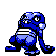

#244
Croagunk
PoisonFighting
Its cheeks hold poison sacs that make eerie sounds It strikes as foes are distracted by the strange noise
Base stats Total 260
HP48
Attack61
Defense40
Speed50
Special61
Details
- Species
- Toxic Maw
- Height
- 2'04"
- Weight
- 50.7 lb
- Catch rate
- 140
- Base exp
- 60
- Growth
- Medium Fast
Level-up moves
LevelMoveType
StartPoison StingPoison
StartSand-AttackNormal
Lv 8Poison StingPoison
Lv 12Sand-AttackNormal
Lv 17Low KickFighting
Lv 23AcidPoison
Lv 29Sucker PunchDark
Lv 35Sludge BombPoison
Lv 41SubmissionFighting
TM / HM
TM01 Mega PunchTM06 ToxicTM08 Body SlamTM09 Take DownTM10 Double-EdgeTM17 SubmissionTM18 CounterTM19 Seismic TossTM26 EarthquakeTM28 DigTM31 MimicTM32 Double TeamTM34 BideTM40 Sludge BombTM44 RestTM48 Rock SlideTM50 SubstituteHM04 Strength